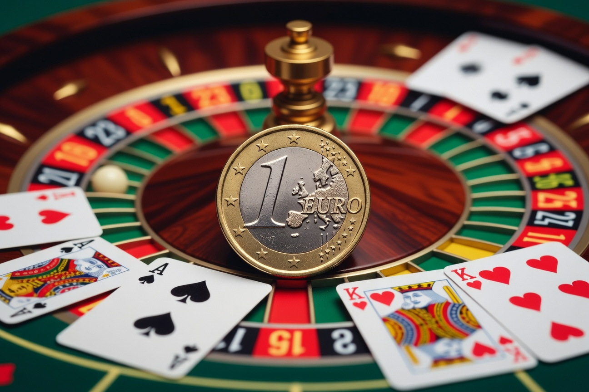
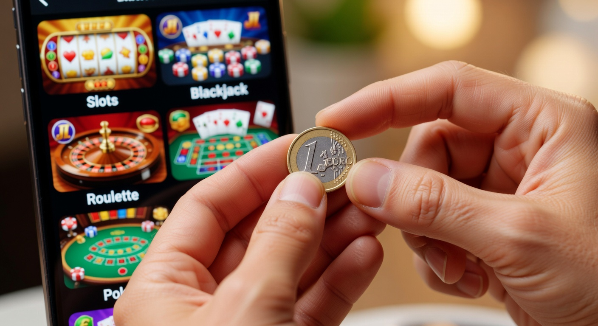
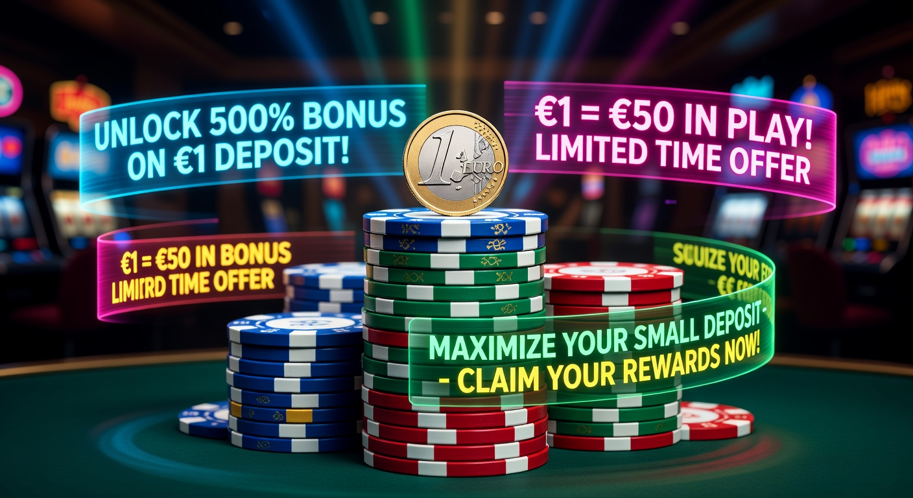
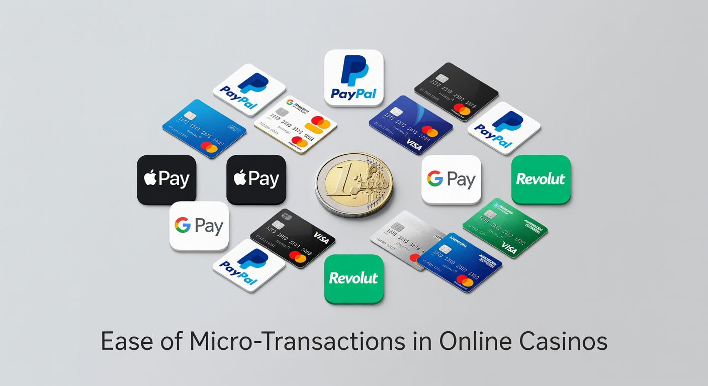

Casinò non AAMS deposito 1 euro: Guida completa ai siti più convenienti
Nel panorama del gioco d'azzardo digitale del 2026, l'accessibilità è diventata il pilastro fondamentale per ogni piattaforma di successo. La ricerca di un casinò non aams deposito 1 euro rappresenta oggi la scelta prioritaria per migliaia di utenti italiani che desiderano testare l'affidabilità di un operatore senza esporsi a rischi finanziari elevati. Queste piattaforme, operanti con licenze internazionali, permettono di accedere a cataloghi vastissimi con un investimento minimo simbolico.
L'evoluzione tecnologica degli ultimi due anni ha reso le transazioni di micro-taglio estremamente rapide e sicure. Oggi, un casinò non aams deposito 1 euro non è più una rarità, ma una realtà consolidata che sfida i limiti imposti dai circuiti tradizionali. In questa guida esploreremo le migliori opzioni disponibili nel 2026, analizzando bonus, sicurezza e i vantaggi reali di versare una cifra così contenuta per iniziare l'avventura di gioco.
Per comprendere meglio il contesto normativo e l'evoluzione del settore, è utile consultare le analisi di fonti autorevoli come Wikipedia sul gioco d'azzardo online, che descrive la transizione dai modelli locali a quelli globali. Molti giocatori preferiscono queste soluzioni estere per la flessibilità dei limiti di puntata e la velocità dei processi di verifica dell'identità.
Perché cercare un deposito minimo così basso?
La motivazione principale che spinge un utente verso un casinò non aams deposito 1 euro è la gestione prudente del bankroll. In un mercato saturo di offerte, versare solo 1€ permette di esplorare l'interfaccia, testare la fluidità dei giochi da mobile e verificare l'efficienza dell'assistenza clienti. Non si tratta solo di risparmio, ma di una vera e propria strategia di "test drive" digitale.
Inoltre, nel 2026, la barriera all'ingresso si è abbassata drasticamente. Molti giocatori cercano un deposito minimo ridotto per attivare bonus specifici o per partecipare a tornei di slot dove la quota di partecipazione è minima. Questa flessibilità economica consente anche a chi non ha grandi budget di godere dell'intrattenimento offerto dai software moderni, garantendo un'esperienza democratica e inclusiva.
Un altro fattore determinante è la curiosità verso i nuovi brand. Piattaforme come Millioner sono diventate popolari proprio perché permettono di entrare nel vivo dell'azione con un investimento irrisorio, offrendo al contempo standard di sicurezza elevatissimi e una libreria di giochi costantemente aggiornata.
Caratteristiche dei casinò non AAMS deposito 1 euro

I siti internazionali che accettano versamenti da un solo euro si distinguono per una struttura tecnologica d'avanguardia. A differenza di molti operatori locali, queste piattaforme ottimizzano i costi di transazione per permettere micro-pagamenti. Un casinò non aams deposito 1 euro di qualità offre solitamente un'interfaccia multilingua, supporto h24 e una navigazione fluida anche su dispositivi di vecchia generazione.
La varietà è il loro punto di forza. Nonostante il versamento sia basso, l'utente ha accesso alle stesse funzionalità dei grandi scommettitori. Questo include l'accesso alle sezioni live, ai giochi istantanei come i Crash Games e alle scommesse sportive integrate. Il sito web deve essere certificato da enti esterni per garantire che ogni sessione di gioco sia trasparente e onesta.
Licenze internazionali e sicurezza del giocatore
La sicurezza in un casinò non aams deposito 1 euro nel 2026 è garantita da licenze rilasciate da autorità come la MGA (Malta Gaming Authority) o la Curacao eGaming. Queste giurisdizioni impongono protocolli rigorosi per la protezione dei dati personali. L'uso della crittografia SSL a 256 bit assicura che ogni transazione, anche quella di un solo euro, avvenga in un ambiente protetto e inattaccabile da hacker.
Inoltre, l'integrità dei giochi è monitorata tramite il sistema RNG (Random Number Generator). Questo algoritmo assicura che ogni risultato, che si tratti di un giro di slot o di una mano di blackjack, sia assolutamente casuale. Portali come Roulettino eccellono in questo ambito, offrendo certificazioni pubbliche sui loro tassi di ritorno al giocatore (RTP).
Software provider e varietà del catalogo
Un casinò non aams deposito 1 euro non sarebbe competitivo senza i grandi nomi del software. Nel 2026, i leader del mercato come Evolution Gaming, Netent e Playtech dominano le librerie di questi siti. La presenza di questi fornitori è sinonimo di qualità e affidabilità, poiché questi colossi collaborano solo con piattaforme che rispettano elevati standard operativi.
- Netent: Famosa per slot iconiche con grafiche cinematografiche.
- Evolution: Il punto di riferimento assoluto per i tavoli dal vivo con croupier professionisti.
- Playtech: Fornitore di sistemi completi che spaziano dalle slot alle piattaforme di poker.
Piattaforme emergenti come Wyns puntano proprio sulla varietà, integrando oltre 5.000 titoli diversi nel loro sito web, garantendo che anche con un piccolo deposito, la scelta non sia mai limitata.
I vantaggi di giocare con un solo euro

Giocare su un casinò non aams deposito 1 euro offre benefici che vanno oltre il semplice risparmio economico. Uno dei vantaggi principali è la possibilità di testare la velocità dei prelievi. Versando 1€ e cercando di vincere una piccola somma, il giocatore può verificare quanto tempo impiega il sito a processare la richiesta di incasso, un test fondamentale per decidere se investire cifre maggiori in futuro.
Inoltre, l'aspetto psicologico è rilevante. Giocare con un budget ridotto elimina lo stress legato alle perdite significative, permettendo all'utente di concentrarsi puramente sul divertimento. Questo approccio è caldeggiato dalle organizzazioni che promuovono il gioco responsabile, poiché limita intrinsecamente il rischio di sviluppare abitudini di gioco problematiche.
Infine, molti casinò non aams deposito 1 euro offrono programmi fedeltà che iniziano a conteggiare i punti fin dalla prima transazione. Questo significa che anche un micro-deposito contribuisce alla scalata dei livelli VIP, portando a benefici a lungo termine come cashback potenziati o bonus personalizzati.
Bonus e promozioni con versamento minimo

Esiste un mito da sfatare: che con un deposito minimo così basso non si ricevano bonus. Nel 2026, la concorrenza tra i brand ha portato alla creazione di offerte specifiche per chi effettua piccoli versamenti. Un casinò non aams deposito 1 euro può offrire, ad esempio, pacchetti di benvenuto che moltiplicano il versamento iniziale o regalano giocate gratuite su slot selezionate.
È essenziale leggere i termini e le condizioni. Sebbene l'offerta sembri generosa, i requisiti di scommessa (wagering) possono variare. Piattaforme come Kinbet si distinguono per la trasparenza delle loro promozioni, rendendo chiaro fin da subito come trasformare il bonus in denaro prelevabile.
Giri gratuiti e bonus senza deposito
Molti utenti cercano un casinò non aams deposito 1 euro sperando di trovare anche offerte correlate di free spin. Spesso, versando un solo euro, il giocatore sblocca una serie di giri gratis che possono portare a vincite reali. Questa è un'ottima opportunità per chi desidera esplorare nuovi titoli senza toccare il proprio saldo principale.
Oltre ai giri gratuiti, alcuni operatori offrono un piccolo credito bonus extra. Questa strategia serve a fidelizzare l'utente, dimostrando che il sito apprezza ogni tipo di cliente, indipendentemente dalla capacità di spesa. Consultare testate come Forbes sulle tendenze Fintech aiuta a capire come queste promozioni siano rese possibili da sistemi di pagamento sempre più efficienti.
Limitazioni sui bonus di benvenuto standard
È importante notare che in un casinò non aams deposito 1 euro, il bonus di benvenuto del 100% o 200% potrebbe non essere la scelta più conveniente se applicato a un solo euro (riceveresti solo 1€ o 2€ di bonus). Per questo motivo, i giocatori più esperti cercano siti che offrono un numero fisso di giri gratis a prescindere dall'importo versato, purché sia rispettato il minimo richiesto.
Operatori come Dragonia hanno rivoluzionato questo concetto nel 2026, proponendo bonus "flat" dove un deposito di 1€ sblocca vantaggi che normalmente richiederebbero 10€ o 20€ su altre piattaforme. Questa aggressività commerciale è ciò che rende attraente il mercato dei siti non certificati ADM.
Metodi di pagamento ideali per le micro-transazioni

La sfida principale per un casinò non aams deposito 1 euro è gestire le commissioni bancarie. Se un metodo di pagamento applica 0,50€ di commissione su una transazione da 1€, l'operazione non è sostenibile. Per questo, nel 2026, questi siti hanno adottato soluzioni finanziarie innovative che minimizzano i costi di elaborazione per l'utente e per il gestore.
L'efficienza dei pagamenti è un indicatore della qualità del sito web. Un operatore serio investe in infrastrutture che supportano transazioni istantanee. La velocità è fondamentale: il giocatore che sceglie un deposito minimo vuole entrare in gioco immediatamente, senza attendere tempi tecnici biblici tipici dei bonifici bancari tradizionali.
Un esempio di eccellenza in questo campo è Divaspin, che ha integrato sistemi di pagamento rapidi che permettono di ricaricare il conto in pochi secondi con un semplice clic dallo smartphone.
Criptovalute: la soluzione per i piccoli depositi
Le criptovalute sono diventate lo standard per ogni casinò non aams deposito 1 euro moderno. Grazie a network come Solana o Lightning Network di Bitcoin, è possibile inviare frazioni di valore con commissioni vicine allo zero. Questo permette ai giocatori di depositare esattamente 1€ (o il suo equivalente in crypto) senza perdite di valore durante il trasferimento.
Le monete digitali offrono anche un livello di privacy superiore. Non è necessario condividere i dati della carta di credito con il sito, riducendo ulteriormente i rischi di sicurezza. Molte guide su BBC News riguardo la regolamentazione crypto spiegano come queste tecnologie stiano cambiando il volto della finanza globale e del gioco online.
Portafogli elettronici e voucher prepagati
Sebbene il termine Paypal sia spesso associato al gioco online, non tutti i siti esteri lo supportano per depositi così bassi a causa delle loro policy sulle commissioni. Tuttavia, alternative come Skrill, Neteller e Jeton sono onnipresenti. Questi e-wallet sono perfetti per un casinò non aams deposito 1 euro perché offrono una gestione separata del budget di gioco rispetto al conto corrente principale.
Anche i voucher prepagati come Neosurf o Paysafecard sono molto popolari. Consentono di acquistare un codice in contanti o online e di caricare il saldo in modo anonimo e veloce. Questa opzione è ideale per chi non vuole lasciare tracce delle proprie attività ludiche sugli estratti conto bancari.
Analisi dei rischi e gestione del budget
Nonostante il casinò non aams deposito 1 euro sembri privo di rischi, è fondamentale mantenere un approccio responsabile. Il rischio principale non è la perdita dell'euro versato, ma la tendenza a effettuare numerosi micro-depositi in rapida successione, perdendo il controllo della spesa totale giornaliera. È utile impostare dei limiti di deposito settimanali direttamente nelle impostazioni del profilo.
Un altro rischio riguarda la scelta di siti poco trasparenti. Sebbene esistano ottimi casinò non aams deposito 1 euro, il giocatore deve sempre verificare che ci sia un sistema di crittografia attivo e che i termini del servizio siano chiari. Leggere recensioni indipendenti e testare il supporto clienti via chat prima di versare è una pratica sempre consigliata.
La gestione del budget (money management) rimane la competenza più importante nel 2026. Anche con un minimo di euro, bisogna sapere quando fermarsi. Sfruttare le tabelle di confronto e gli strumenti di auto-esclusione offerti dai siti seri è il modo migliore per garantire che il gioco rimanga un piacere.
Differenze tra siti ADM e piattaforme estere
In Italia, l'agenzia delle dogane e dei monopoli (ADM) regola il mercato nazionale. Tuttavia, i requisiti burocratici e fiscali rendono difficile per gli operatori italiani offrire un deposito minimo così basso. Spesso, il limite minimo sui siti ADM è di 10€ o 20€. Al contrario, un casinò non aams deposito 1 euro opera in regimi fiscali differenti, che permettono una maggiore flessibilità nei tagli di ricarica.
Le differenze non si fermano qui. I siti internazionali spesso offrono:
- Limiti di puntata più elastici.
- Assenza del protocollo di auto-esclusione trasversale italiano.
- Accesso a giochi non ancora approvati o presenti nel mercato locale.
- Bonus più generosi grazie alla minore pressione fiscale.
Pro e Contro dei casinò non AAMS deposito 1 euro
Valutare oggettivamente un casinò non aams deposito 1 euro richiede un'analisi dei vantaggi e degli svantaggi. Ecco una tabella riassuntiva basata sulle performance del 2026:
| Caratteristica | Vantaggi (PRO) | Svantaggi (CONTRO) |
|---|---|---|
| Accessibilità | Ingresso con solo 1€, ideale per test. | Possibili commissioni su alcuni metodi. |
| Bonus | Giri gratis e moltiplicatori elevati. | Requisiti di scommessa talvolta alti. |
| Varietà Giochi | Migliaia di slot e tavoli live Evolution. | Assenza di alcuni giochi locali specifici. |
| Sicurezza | Licenze internazionali e RNG certificato. | Mancanza di tutela diretta ADM. |
Complessivamente, la possibilità di giocare con investimenti minimi supera gli svantaggi per la maggior parte degli utenti ricreativi, rendendo queste piattaforme un pilastro dell'intrattenimento moderno.
Come registrarsi su un sito internazionale
La procedura per iscriversi a un casinò non aams deposito 1 euro nel 2026 è stata semplificata per favorire l'immediatezza. Di solito, il sito richiede solo un indirizzo email e una password per creare il conto gioco iniziale. Successivamente, per poter prelevare, sarà necessario completare la verifica dell'identità (KYC), come richiesto dalle leggi internazionali anti-riciclaggio.
- Scegli un operatore affidabile dalla nostra lista (es. Millioner).
- Clicca sul pulsante di registrazione e compila i campi richiesti.
- Accedi alla sezione "Cassa" o "Deposito".
- Seleziona un metodo di pagamento che supporti il deposito minimo euro desiderato.
- Conferma la transazione e inizia a giocare.
Ricorda sempre di inserire dati reali durante la registrazione. Se i dati non corrispondono ai documenti forniti in fase di verifica, il sito potrebbe bloccare i prelievi, invalidando ogni eventuale vincita ottenuta con il tuo un deposito iniziale.
Roulette con puntata da 1 euro
Uno dei giochi più amati da chi frequenta un casinò non aams deposito 1 euro è senza dubbio la roulette. Nel 2026, l'esperienza live è diventata incredibilmente immersiva. Molti tavoli permettono puntate minime a partire da pochi centesimi, il che significa che con 1€ di deposito, si possono effettuare diverse giocate su numeri pieni o combinazioni semplici.
La roulette con puntata da 1 euro è la preferita da chi utilizza strategie come il raddoppio (Martingala), sebbene con un budget così piccolo la progressione sia limitata. Tuttavia, la soddisfazione di vedere la pallina fermarsi sul proprio numero dopo aver investito una cifra minima è impagabile. Operatori come Roulettino si focalizzano proprio su questo tipo di esperienza, offrendo varianti classiche, francesi e americane con grafiche HD.
È importante notare che le varianti moderne, come la Lightning Roulette di Evolution, aggiungono moltiplicatori casuali che possono trasformare una piccola puntata in una vincita significativa, rendendo il gioco eccitante anche per chi dispone di un budget ridotto.
Casinò 70 Giri Gratis Senza Deposito
Una tendenza forte del 2026 è la combinazione tra il deposito minimo e i bonus gratuiti. Alcuni operatori offrono l'incredibile promozione "Casinò 70 Giri Gratis Senza Deposito" semplicemente per aver convalidato il conto o scaricato l'app ufficiale. Questa offerta è perfetta se combinata con un successivo versamento di 1€, poiché permette di accumulare un bankroll iniziale senza toccare il portafoglio.
Ricevere 70 giri gratis permette di testare la volatilità di una slot specifica. Spesso, queste promozioni sono legate a titoli di successo di Netent o Playtech. È fondamentale controllare il "cap" sulle vincite, ovvero il limite massimo di denaro che si può prelevare dai giri gratuiti, che solitamente si aggira tra i 50€ e i 100€.
Brand come Divaspin utilizzano spesso queste campagne per attirare nuovi utenti, dimostrando che la generosità è una chiave del successo nel mercato internazionale dei casinò non aams deposito 1 euro.
Conclusioni
In conclusione, scegliere un casinò non aams deposito 1 euro nel 2026 rappresenta la soluzione più intelligente per chi cerca divertimento senza stress finanziario. Grazie alle licenze internazionali, a tecnologie di pagamento ultra-rapide come le criptovalute e a cataloghi di gioco sterminati, l'utente ha a disposizione un parco giochi virtuale completo con un investimento minimo simbolico.
Che tu sia un appassionato di slot, un amante della roulette o un cercatore di bonus generosi, la possibilità di iniziare con un solo euro democratizza l'accesso al gioco d'azzardo online. Tuttavia, la prudenza non è mai troppa: scegli sempre piattaforme recensite positivamente e gioca con moderazione. Il segreto del successo sta nel considerare il gioco come una forma di intrattenimento, dove il valore dell'esperienza conta più della cifra scommessa.
Per ulteriori approfondimenti sull'economia digitale e l'evoluzione del settore finanziario legato ai pagamenti online, consigliamo di leggere gli articoli del New York Times sull'economia globale, che spiegano come la micro-economia stia plasmando il futuro del commercio elettronico e del gaming.
Domande Frequenti (FAQ)
È sicuro giocare in un casinò non aams deposito 1 euro?
Sì, a condizione che il sito possieda una licenza internazionale valida (come Curacao o Malta) e utilizzi sistemi di protezione dati SSL e algoritmi RNG certificati per l'equità dei giochi.
Quali sono i migliori metodi per depositare solo 1 euro?
Le criptovalute (Bitcoin, USDT via Lightning Network), i portafogli elettronici come Jeton e alcuni voucher prepagati come Neosurf sono le opzioni più efficienti per i micro-depositi nel 2026.
Posso vincere soldi veri con un deposito di 1 euro?
Certamente. Anche se il saldo iniziale è basso, ogni giocata può generare vincite reali. Molti giocatori utilizzano il primo euro per attivare free spin che possono portare a premi consistenti.
Esistono limiti di prelievo su questi siti?
Sì, ogni sito web ha le proprie politiche. Solitamente il limite minimo di prelievo è superiore a 1€ (spesso tra 10€ e 20€), quindi dovrai accumulare delle vincite prima di poter incassare.
Quali giochi offrono le puntate più basse?
Le slot machine permettono spesso giri da 0,01€ o 0,10€. Anche la roulette con puntata da 1 euro o meno è molto comune nelle versioni software e live.

Content strategist e copywriter con esperienza decennale nel marketing digitale.